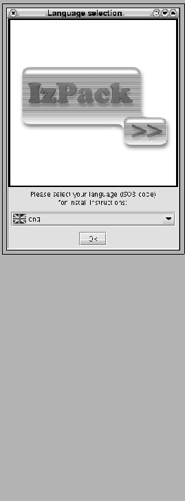

IZPACK is a tool that will help you to solve your software installation
problems. It is a JavaTM based software installer builder that will run
on any operating system coming with a Java Virtual Machine
(JVM) that is compliant with the Sun JVM 1.2 or higher. Its design is
very modular and you will be able to choose how you want your
installer to look and you will also be able to customize it using a very
simple Application Programming Interface (API). Although
IZPACK is essentially a JavaTM only application (it can run on virtually
any operating system), it can interact in a clean way with the
underlying operating system. Native code can interact with it on a
specific platform without disturbing the operation on incompatible
operating systems. For instance, you can develop Unix-specific code that
will be silent if run on Windows. To put it in a nutshell, whereas most
of the other JavaTM installers force you to go their way, IZPACK will
let you go your way. Some respectable companies have been using
it in order to produce customized installers for their very
specific needs.
"So, if it's so good, how much is it ?" : well, you can get it
for free. BUT IZPACK is not a freeware. It's not
free as in "free beer" but "free as in free
speech". So it's neither freeware nor public domain.
It is software covered by the GNU GENERAL PUBLIC LICENSE (GPL).
It uses the tactic of copyleft : to make it short, you can use
it, modify it and redistribute it freely but you must also make your
modifications available to everyone whenever you publish a modified
version of a copylefted software. You have access to the
IZPACK source code and you can modify it to make it suit your needs,
but if you publish such a modified version, you are forced to publish
the modifications you've made. That's a fair exchange of
expertise and work. To learn more about the GPL license and the
copyleft principles, visit http://www.gnu.org/.
IZPACK uses XML files to describe installations. When you make an installer, you have a choice of panels. You can see panels as a kind of plugin that composes the installer. For instance, a panel can choose the installation path, the packs to install, prompt the user for a license agreement and so on. This approach is very modular. You can also create your own panels if you have specific needs. In some cases you even have a choice from multiple panel versions for the same task. You can also choose the order in which panels appear during the installation process. IZPACK can be used in a number of different ways:
Here is a brief (and certainly incomplete !) list of the main IZPACK features :
I started writing IZPACK in April 2001 and many people have helped me improving it since. I prefer not to mention them here as I would for sure forget some of them, so please check the file named Thanks.txt which I try to get as up-to-date as possible in order to mention everyone who helped me. As far as I'm concerned, I'm a french student and I rather see this as a fun activity in my free time where I can learn a lot of great things. The contributors to the project are both individuals and companies. Help can take any form :
The official IZPACK homepage is located at http://www.izforge.com/izpack/. The IzPack developer services (mailing-lists, CVS, patches manager, bugs tracker, ...) are generously hosted by BerliOS. The IzPack BerliOS section is located at http://developer.berlios.de/projects/izpack/. Feel free to use these services. In particular, there are two mailing-lists:
IZPACK uses several 3rd party libraries and I would like to mention them in respect for their respective authors work :
So, now let's dive into understanding how IZPACK works. You'll be surprised to see how powerful and simple it can be :-)